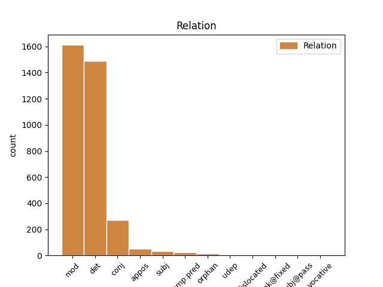
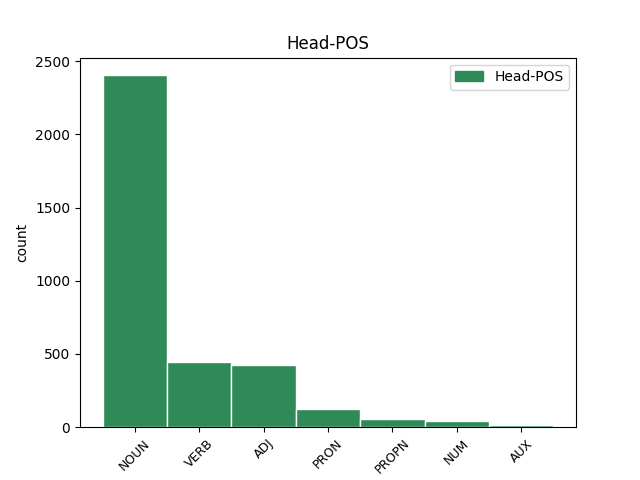

Distribution of features within this leaf



Agreement Rules sorted by frequency.
- When the dependent token is the determiner(det) of the head token, and the dependent token is DET.
1 Iþ _ _ _ _ 0 _ _ _
2 þu _ _ _ _ 0 _ _ _
3 rodei _ _ _ _ 0 _ _ _
4 þatei _ _ _ _ 0 _ _ _
5 gadof _ _ _ _ 0 _ _ _
6 ist _ _ _ _ 0 _ _ _
7 þizai sa DET Pd Case=Dat|Gender=Fem|Number=Sing 9 det _ ref=TIT_2.1
8 hailon _ _ _ _ 0 _ _ _
9 laiseinai laiseins NOUN Nb Case=Dat|Gender=Fem|Number=Sing 0 _ _ _
1 Iþ _ _ _ _ 0 _ _ _
2 þu _ _ _ _ 0 _ _ _
3 rodei _ _ _ _ 0 _ _ _
4 þatei _ _ _ _ 0 _ _ _
5 gadof _ _ _ _ 0 _ _ _
6 ist _ _ _ _ 0 _ _ _
7 þizai _ _ _ _ 0 _ _ _
8 hailon hails ADJ A- Case=Dat|Degree=Pos|Gender=Fem|Number=Sing|Strength=Weak 9 mod _ ref=TIT_2.1
9 laiseinai laiseins NOUN Nb Case=Dat|Gender=Fem|Number=Sing 0 _ _ _
1 in _ _ _ _ 0 _ _ _
2 þizozei _ _ _ _ 0 _ _ _
3 fairinos _ _ _ _ 0 _ _ _
4 gasak _ _ _ _ 0 _ _ _
5 ins _ _ _ _ 0 _ _ _
6 ƕassaba _ _ _ _ 0 _ _ _
7 ei _ _ _ _ 0 _ _ _
8 hailai _ _ _ _ 0 _ _ _
9 sijaina _ _ _ _ 0 _ _ _
10 in _ _ _ _ 0 _ _ _
11 galaubeinai _ _ _ _ 0 _ _ _
12 ni _ _ _ _ 0 _ _ _
13 atsaiƕandans _ _ _ _ 0 _ _ _
14 judaiwiskaize _ _ _ _ 0 _ _ _
15 spilli _ _ _ _ 0 _ _ _
16 jah _ _ _ _ 0 _ _ _
17 anabusne _ _ _ _ 0 _ _ _
18 manne manna NOUN Nb Case=Gen|Gender=Masc|Number=Plur 0 _ _ _
19 afwandjandane af-wandjan VERB V- Case=Gen|Gender=Masc,Neut|Number=Plur|Strength=Weak|Tense=Pres|VerbForm=Part|Voice=Act 18 mod _ ref=TIT_1.14
20 sis _ _ _ _ 0 _ _ _
21 sunja _ _ _ _ 0 _ _ _
1 guþ _ _ _ _ 0 _ _ _
2 andhaitand _ _ _ _ 0 _ _ _
3 kunnan _ _ _ _ 0 _ _ _
4 iþ _ _ _ _ 0 _ _ _
5 waurstwam _ _ _ _ 0 _ _ _
6 inwidand _ _ _ _ 0 _ _ _
7 andasetjai _ _ _ _ 0 _ _ _
8 wisandans _ _ _ _ 0 _ _ _
9 jah _ _ _ _ 0 _ _ _
10 ungalaubjandans ungalaubjands VERB V- Case=Nom|Gender=Masc|Number=Plur|Strength=Weak|Tense=Pres|VerbForm=Part|Voice=Act 0 _ _ _
11 jah _ _ _ _ 0 _ _ _
12 du _ _ _ _ 0 _ _ _
13 allamma _ _ _ _ 0 _ _ _
14 waurstwe _ _ _ _ 0 _ _ _
15 godaize _ _ _ _ 0 _ _ _
16 uskusanai us-kiusan VERB V- Aspect=Perf|Case=Nom|Gender=Masc|Number=Plur|Strength=Strong|Tense=Past|VerbForm=Part|Voice=Pass 10 conj _ ref=TIT_1.16
1 aþþan _ _ _ _ 0 _ _ _
2 all _ _ _ _ 0 _ _ _
3 hrain hrains ADJ A- Case=Nom|Degree=Pos|Gender=Neut|Number=Sing|Strength=Strong 0 _ _ _
4 hrainjaim _ _ _ _ 0 _ _ _
5 iþ _ _ _ _ 0 _ _ _
6 bisaulidaim _ _ _ _ 0 _ _ _
7 jah _ _ _ _ 0 _ _ _
8 ungalaubjandam _ _ _ _ 0 _ _ _
9 ni _ _ _ _ 0 _ _ _
10 waiht _ _ _ _ 0 _ _ _
11 hrain hrains ADJ A- Case=Nom|Degree=Pos|Gender=Neut|Number=Sing|Strength=Strong 3 conj _ ref=TIT_1.15
12 ak _ _ _ _ 0 _ _ _
13 bisaulida _ _ _ _ 0 _ _ _
14 sind _ _ _ _ 0 _ _ _
15 ize _ _ _ _ 0 _ _ _
16 jah _ _ _ _ 0 _ _ _
17 aha _ _ _ _ 0 _ _ _
18 jah _ _ _ _ 0 _ _ _
19 miþwissei _ _ _ _ 0 _ _ _
1 in _ _ _ _ 0 _ _ _
2 þizozei _ _ _ _ 0 _ _ _
3 waihtais _ _ _ _ 0 _ _ _
4 bilaiþ _ _ _ _ 0 _ _ _
5 þus _ _ _ _ 0 _ _ _
6 in _ _ _ _ 0 _ _ _
7 Kretai _ _ _ _ 0 _ _ _
8 in _ _ _ _ 0 _ _ _
9 þize _ _ _ _ 0 _ _ _
10 ei _ _ _ _ 0 _ _ _
11 wanata _ _ _ _ 0 _ _ _
12 atgaraihtjais _ _ _ _ 0 _ _ _
13 jah _ _ _ _ 0 _ _ _
14 gasatjais _ _ _ _ 0 _ _ _
15 and _ _ _ _ 0 _ _ _
16 baurgs _ _ _ _ 0 _ _ _
17 praizbwtairein _ _ _ _ 0 _ _ _
18 swaswe _ _ _ _ 0 _ _ _
19 ik _ _ _ _ 0 _ _ _
20 þus _ _ _ _ 0 _ _ _
21 garaidida _ _ _ _ 0 _ _ _
22 jabai _ _ _ _ 0 _ _ _
23 ƕas _ _ _ _ 0 _ _ _
24 ist _ _ _ _ 0 _ _ _
25 ungafairinonds _ _ _ _ 0 _ _ _
26 ainaizos ains NUM Ma Case=Gen|Gender=Fem|Number=Sing 27 mod _ ref=TIT_1.6
27 qenais qens NOUN Nb Case=Gen|Gender=Fem|Number=Sing 0 _ _ _
28 aba _ _ _ _ 0 _ _ _
29 barna _ _ _ _ 0 _ _ _
30 habands _ _ _ _ 0 _ _ _
31 galaubeina _ _ _ _ 0 _ _ _
32 ni _ _ _ _ 0 _ _ _
33 in _ _ _ _ 0 _ _ _
34 usqissai _ _ _ _ 0 _ _ _
35 usstiureins _ _ _ _ 0 _ _ _
36 aiþþau _ _ _ _ 0 _ _ _
37 ungaƕairba _ _ _ _ 0 _ _ _
1 aþþan _ _ _ _ 0 _ _ _
2 all alls ADJ Px Case=Nom|Gender=Neut|Number=Sing 3 subj _ ref=TIT_1.15
3 hrain hrains ADJ A- Case=Nom|Degree=Pos|Gender=Neut|Number=Sing|Strength=Strong 0 _ _ _
4 hrainjaim _ _ _ _ 0 _ _ _
5 iþ _ _ _ _ 0 _ _ _
6 bisaulidaim _ _ _ _ 0 _ _ _
7 jah _ _ _ _ 0 _ _ _
8 ungalaubjandam _ _ _ _ 0 _ _ _
9 ni _ _ _ _ 0 _ _ _
10 waiht _ _ _ _ 0 _ _ _
11 hrain _ _ _ _ 0 _ _ _
12 ak _ _ _ _ 0 _ _ _
13 bisaulida _ _ _ _ 0 _ _ _
14 sind _ _ _ _ 0 _ _ _
15 ize _ _ _ _ 0 _ _ _
16 jah _ _ _ _ 0 _ _ _
17 aha _ _ _ _ 0 _ _ _
18 jah _ _ _ _ 0 _ _ _
19 miþwissei _ _ _ _ 0 _ _ _
1 þaþro _ _ _ _ 0 _ _ _
2 þan _ _ _ _ 0 _ _ _
3 weis weis PRON Pp Case=Nom|Gender=Masc|Number=Plur|Person=1|PronType=Prs 0 _ _ _
4 þai _ _ _ _ 0 _ _ _
5 libandans _ _ _ _ 0 _ _ _
6 þai _ _ _ _ 0 _ _ _
7 aflifnandans af-lifnan VERB V- Case=Nom|Gender=Masc|Number=Plur|Strength=Weak|Tense=Pres|VerbForm=Part|Voice=Act 3 appos _ ref=1THESS_4.17
8 suns _ _ _ _ 0 _ _ _
9 miþ _ _ _ _ 0 _ _ _
10 imma _ _ _ _ 0 _ _ _
11 frawilwanda _ _ _ _ 0 _ _ _
12 in _ _ _ _ 0 _ _ _
13 milhmam _ _ _ _ 0 _ _ _
14 du _ _ _ _ 0 _ _ _
15 gamotjan _ _ _ _ 0 _ _ _
16 fraujin _ _ _ _ 0 _ _ _
17 in _ _ _ _ 0 _ _ _
18 luftau _ _ _ _ 0 _ _ _
19 jah _ _ _ _ 0 _ _ _
20 swa _ _ _ _ 0 _ _ _
21 framwigis _ _ _ _ 0 _ _ _
22 miþ _ _ _ _ 0 _ _ _
23 fraujin _ _ _ _ 0 _ _ _
24 wairþam _ _ _ _ 0 _ _ _
1 aþþan _ _ _ _ 0 _ _ _
2 jabai _ _ _ _ 0 _ _ _
3 ƕas _ _ _ _ 0 _ _ _
4 swesaim swes ADJ A- Case=Dat|Degree=Pos|Gender=Masc|Number=Plur|Strength=Strong 0 _ _ _
5 þishun _ _ _ _ 0 _ _ _
6 ingardjam ingardja ADJ A- Case=Dat|Degree=Pos|Gender=Masc|Number=Plur|Strength=Weak 4 appos _ ref=1TIM_5.8
7 ni _ _ _ _ 0 _ _ _
8 gaþlaihiþ _ _ _ _ 0 _ _ _
9 galaubein _ _ _ _ 0 _ _ _
10 inwidiþ _ _ _ _ 0 _ _ _
11 jah _ _ _ _ 0 _ _ _
12 ist _ _ _ _ 0 _ _ _
13 ungalaubjandin _ _ _ _ 0 _ _ _
14 wairsiza _ _ _ _ 0 _ _ _
1 guþ _ _ _ _ 0 _ _ _
2 andhaitand _ _ _ _ 0 _ _ _
3 kunnan _ _ _ _ 0 _ _ _
4 iþ _ _ _ _ 0 _ _ _
5 waurstwam _ _ _ _ 0 _ _ _
6 inwidand _ _ _ _ 0 _ _ _
7 andasetjai andasets ADJ A- Case=Nom|Degree=Pos|Gender=Masc|Number=Plur|Strength=Strong 8 comp:pred _ ref=TIT_1.16
8 wisandans wisan AUX V- Case=Nom|Gender=Masc|Number=Plur|Strength=Weak|Tense=Pres|VerbForm=Part|Voice=Act 0 _ _ _
9 jah _ _ _ _ 0 _ _ _
10 ungalaubjandans _ _ _ _ 0 _ _ _
11 jah _ _ _ _ 0 _ _ _
12 du _ _ _ _ 0 _ _ _
13 allamma _ _ _ _ 0 _ _ _
14 waurstwe _ _ _ _ 0 _ _ _
15 godaize _ _ _ _ 0 _ _ _
16 uskusanai _ _ _ _ 0 _ _ _
1 þanei _ _ _ _ 0 _ _ _
2 in _ _ _ _ 0 _ _ _
3 melam _ _ _ _ 0 _ _ _
4 swesaim _ _ _ _ 0 _ _ _
5 taikneiþ _ _ _ _ 0 _ _ _
6 sa _ _ _ _ 0 _ _ _
7 audaga audags ADJ A- Case=Nom|Degree=Pos|Gender=Masc|Number=Sing|Strength=Weak 0 _ _ _
8 jah _ _ _ _ 0 _ _ _
9 ains ains NUM Ma Case=Nom|Gender=Masc|Number=Sing 7 conj _ ref=1TIM_6.15
10 mahteiga _ _ _ _ 0 _ _ _
11 jah _ _ _ _ 0 _ _ _
12 þiudans _ _ _ _ 0 _ _ _
13 þiudanondane _ _ _ _ 0 _ _ _
14 jah _ _ _ _ 0 _ _ _
15 frauja _ _ _ _ 0 _ _ _
16 fraujinondane _ _ _ _ 0 _ _ _
17 saei _ _ _ _ 0 _ _ _
18 ains _ _ _ _ 0 _ _ _
19 aih _ _ _ _ 0 _ _ _
20 undiwanein _ _ _ _ 0 _ _ _
21 jah _ _ _ _ 0 _ _ _
22 liuhaþ _ _ _ _ 0 _ _ _
23 bauiþ _ _ _ _ 0 _ _ _
24 unatgaht _ _ _ _ 0 _ _ _
25 þanei _ _ _ _ 0 _ _ _
26 saƕ _ _ _ _ 0 _ _ _
27 manne _ _ _ _ 0 _ _ _
28 ni _ _ _ _ 0 _ _ _
29 ainshun _ _ _ _ 0 _ _ _
30 nih _ _ _ _ 0 _ _ _
31 saiƕan _ _ _ _ 0 _ _ _
32 mag _ _ _ _ 0 _ _ _
1 iþ _ _ _ _ 0 _ _ _
2 Iesus _ _ _ _ 0 _ _ _
3 kunnands _ _ _ _ 0 _ _ _
4 þatei _ _ _ _ 0 _ _ _
5 munaidedun _ _ _ _ 0 _ _ _
6 usgaggan _ _ _ _ 0 _ _ _
7 jah _ _ _ _ 0 _ _ _
8 wilwan _ _ _ _ 0 _ _ _
9 ina _ _ _ _ 0 _ _ _
10 ei _ _ _ _ 0 _ _ _
11 tawidedeina _ _ _ _ 0 _ _ _
12 ina _ _ _ _ 0 _ _ _
13 du _ _ _ _ 0 _ _ _
14 þiudana _ _ _ _ 0 _ _ _
15 afiddja _ _ _ _ 0 _ _ _
16 aftra _ _ _ _ 0 _ _ _
17 in _ _ _ _ 0 _ _ _
18 fairguni _ _ _ _ 0 _ _ _
19 is is PRON Pp Case=Nom|Gender=Masc|Number=Sing|Person=3|PronType=Prs 0 _ _ _
20 ains ains NUM Ma Case=Nom|Gender=Masc|Number=Sing 19 orphan _ ref=JOHN_6.15
1 Lukas Lukas PROPN Ne Case=Nom|Gender=Masc|Number=Sing 0 _ _ _
2 ist _ _ _ _ 0 _ _ _
3 miþ _ _ _ _ 0 _ _ _
4 mis _ _ _ _ 0 _ _ _
5 ains ains NUM Ma Case=Nom|Gender=Masc|Number=Sing 1 appos _ ref=2TIM_4.11
1 swaswe _ _ _ _ 0 _ _ _
2 baþ _ _ _ _ 0 _ _ _
3 þuk _ _ _ _ 0 _ _ _
4 saljan _ _ _ _ 0 _ _ _
5 in _ _ _ _ 0 _ _ _
6 Aifaison _ _ _ _ 0 _ _ _
7 galeiþands _ _ _ _ 0 _ _ _
8 Makedonais _ _ _ _ 0 _ _ _
9 ei _ _ _ _ 0 _ _ _
10 faurbiudais _ _ _ _ 0 _ _ _
11 sumaim _ _ _ _ 0 _ _ _
12 ei _ _ _ _ 0 _ _ _
13 anþarleiko _ _ _ _ 0 _ _ _
14 ni _ _ _ _ 0 _ _ _
15 laisjaina _ _ _ _ 0 _ _ _
16 niþ _ _ _ _ 0 _ _ _
17 þan _ _ _ _ 0 _ _ _
18 atsaiƕaina _ _ _ _ 0 _ _ _
19 spille _ _ _ _ 0 _ _ _
20 jah _ _ _ _ 0 _ _ _
21 gabaurþiwaurde _ _ _ _ 0 _ _ _
22 andalausaize _ _ _ _ 0 _ _ _
23 þoei _ _ _ _ 0 _ _ _
24 soknim _ _ _ _ 0 _ _ _
25 andstaldand _ _ _ _ 0 _ _ _
26 mais _ _ _ _ 0 _ _ _
27 þau _ _ _ _ 0 _ _ _
28 timreinai timreins NOUN Nb Case=Dat|Gender=Fem|Number=Sing 0 _ _ _
29 gudis _ _ _ _ 0 _ _ _
30 þizai _ _ _ _ 0 _ _ _
31 wisandein wisan AUX V- Case=Dat|Gender=Fem|Number=Sing|Strength=Weak|Tense=Pres|VerbForm=Part|Voice=Act 28 mod _ LId=1|ref=1TIM_1.4
32 in _ _ _ _ 0 _ _ _
33 galaubeinai _ _ _ _ 0 _ _ _
1 jah _ _ _ _ 0 _ _ _
2 izwis _ _ _ _ 0 _ _ _
3 simle _ _ _ _ 0 _ _ _
4 wisandans wisan AUX V- Case=Acc|Gender=Masc|Number=Plur|Strength=Weak|Tense=Pres|VerbForm=Part|Voice=Act 0 _ _ _
5 framaþidans framaþjan VERB V- Aspect=Perf|Case=Acc|Gender=Masc|Number=Plur|Strength=Strong|Tense=Past|VerbForm=Part|Voice=Pass 4 comp:pred _ ref=COL_1.21
6 jah _ _ _ _ 0 _ _ _
7 fijands _ _ _ _ 0 _ _ _
8 gahugdai _ _ _ _ 0 _ _ _
9 in _ _ _ _ 0 _ _ _
10 waurstwam _ _ _ _ 0 _ _ _
11 ubilaim _ _ _ _ 0 _ _ _
12 iþ _ _ _ _ 0 _ _ _
13 nu _ _ _ _ 0 _ _ _
14 gafriþodai _ _ _ _ 0 _ _ _
15 in _ _ _ _ 0 _ _ _
16 leika _ _ _ _ 0 _ _ _
17 mammons _ _ _ _ 0 _ _ _
18 is _ _ _ _ 0 _ _ _
19 þairh _ _ _ _ 0 _ _ _
20 dauþu _ _ _ _ 0 _ _ _
21 du _ _ _ _ 0 _ _ _
22 atsatjan _ _ _ _ 0 _ _ _
23 izwis _ _ _ _ 0 _ _ _
24 weihans _ _ _ _ 0 _ _ _
25 jah _ _ _ _ 0 _ _ _
26 unwammans _ _ _ _ 0 _ _ _
27 jah _ _ _ _ 0 _ _ _
28 usfairinans _ _ _ _ 0 _ _ _
29 faura _ _ _ _ 0 _ _ _
30 imma _ _ _ _ 0 _ _ _
31 jabai _ _ _ _ 0 _ _ _
32 sweþauh _ _ _ _ 0 _ _ _
33 þairhwisiþ _ _ _ _ 0 _ _ _
34 in _ _ _ _ 0 _ _ _
35 galaubeinai _ _ _ _ 0 _ _ _
36 gaþwastidai _ _ _ _ 0 _ _ _
37 jah _ _ _ _ 0 _ _ _
38 gatulgidai _ _ _ _ 0 _ _ _
39 jah _ _ _ _ 0 _ _ _
40 ni _ _ _ _ 0 _ _ _
41 afwagidai _ _ _ _ 0 _ _ _
42 af _ _ _ _ 0 _ _ _
43 wenai _ _ _ _ 0 _ _ _
44 aiwaggeljons _ _ _ _ 0 _ _ _
45 þoei _ _ _ _ 0 _ _ _
46 hausideduþ _ _ _ _ 0 _ _ _
47 sei _ _ _ _ 0 _ _ _
48 merida _ _ _ _ 0 _ _ _
49 ist _ _ _ _ 0 _ _ _
50 in _ _ _ _ 0 _ _ _
51 alla _ _ _ _ 0 _ _ _
52 gaskaft _ _ _ _ 0 _ _ _
53 þo _ _ _ _ 0 _ _ _
54 uf _ _ _ _ 0 _ _ _
55 himina _ _ _ _ 0 _ _ _
56 þizozei _ _ _ _ 0 _ _ _
57 warþ _ _ _ _ 0 _ _ _
58 ik _ _ _ _ 0 _ _ _
59 Pawlus _ _ _ _ 0 _ _ _
60 andbahts _ _ _ _ 0 _ _ _
1 aþþan _ _ _ _ 0 _ _ _
2 ni _ _ _ _ 0 _ _ _
3 þat-ain _ _ _ _ 0 _ _ _
4 ak _ _ _ _ 0 _ _ _
5 jah _ _ _ _ 0 _ _ _
6 Raibaikka Raibaikka PROPN Ne Case=Nom|Gender=Fem|Number=Sing 0 _ _ _
7 us _ _ _ _ 0 _ _ _
8 ainamma _ _ _ _ 0 _ _ _
9 galigrja _ _ _ _ 0 _ _ _
10 habandei haban VERB V- Case=Nom|Gender=Fem|Number=Sing|Strength=Weak|Tense=Pres|VerbForm=Part|Voice=Act 6 orphan _ ref=ROM_9.10
11 Isakis _ _ _ _ 0 _ _ _
12 attins _ _ _ _ 0 _ _ _
13 unsaris _ _ _ _ 0 _ _ _
1 akei _ _ _ _ 0 _ _ _
2 ƕarjizuh _ _ _ _ 0 _ _ _
3 swesa _ _ _ _ 0 _ _ _
4 giba _ _ _ _ 0 _ _ _
5 habaiþ _ _ _ _ 0 _ _ _
6 fram _ _ _ _ 0 _ _ _
7 guda _ _ _ _ 0 _ _ _
8 sums sums ADJ Px Case=Nom|Gender=Masc|Number=Sing 0 _ _ _
9 swa _ _ _ _ 0 _ _ _
10 sums sums ADJ Px Case=Nom|Gender=Masc|Number=Sing 8 orphan _ ref=1COR_7.7
11 uh _ _ _ _ 0 _ _ _
12 swa _ _ _ _ 0 _ _ _
1 unte _ _ _ _ 0 _ _ _
2 þo _ _ _ _ 0 _ _ _
3 gasaiƕanona _ _ _ _ 0 _ _ _
4 riurja _ _ _ _ 0 _ _ _
5 sind _ _ _ _ 0 _ _ _
6 iþ _ _ _ _ 0 _ _ _
7 þo _ _ _ _ 0 _ _ _
8 ungasaiƕanona ungasaiƕans VERB V- Aspect=Perf|Case=Nom|Gender=Neut|Number=Plur|Strength=Weak|Tense=Past|VerbForm=Part|Voice=Pass 9 subj _ ref=2COR_4.18
9 aiweina aiweins ADJ A- Case=Nom|Degree=Pos|Gender=Neut|Number=Plur|Strength=Strong 0 _ _ _
1 ƕileiks ƕileiks ADJ A- Case=Nom|Degree=Pos|Gender=Masc|Number=Sing|Strength=Strong 4 dislocated _ ref=1COR_15.48
2 sa _ _ _ _ 0 _ _ _
3 ufarhiminakunda _ _ _ _ 0 _ _ _
4 swaleikai swaleiks ADJ A- Case=Nom|Degree=Pos|Gender=Masc|Number=Plur|Strength=Strong 0 _ _ _
5 jah _ _ _ _ 0 _ _ _
6 þai _ _ _ _ 0 _ _ _
7 ufarhiminakundans _ _ _ _ 0 _ _ _
1 jah _ _ _ _ 0 _ _ _
2 hausidedun _ _ _ _ 0 _ _ _
3 þize _ _ _ _ 0 _ _ _
4 Fareisaie _ _ _ _ 0 _ _ _
5 sumai sums ADJ Px Case=Nom|Gender=Masc|Number=Plur 0 _ _ _
6 þata _ _ _ _ 0 _ _ _
7 þai _ _ _ _ 0 _ _ _
8 wisandans wisan AUX V- Case=Nom|Gender=Masc|Number=Plur|Strength=Weak|Tense=Pres|VerbForm=Part|Voice=Act 5 appos _ LId=1|ref=JOHN_9.40
9 miþ _ _ _ _ 0 _ _ _
10 imma _ _ _ _ 0 _ _ _
11 jah _ _ _ _ 0 _ _ _
12 qeþun _ _ _ _ 0 _ _ _
13 du _ _ _ _ 0 _ _ _
14 imma _ _ _ _ 0 _ _ _
1 aiþþau _ _ _ _ 0 _ _ _
2 waila _ _ _ _ 0 _ _ _
3 þau _ _ _ _ 0 _ _ _
4 swe _ _ _ _ 0 _ _ _
5 unfrodana _ _ _ _ 0 _ _ _
6 nimaiþ _ _ _ _ 0 _ _ _
7 mik _ _ _ _ 0 _ _ _
8 ei _ _ _ _ 0 _ _ _
9 jah _ _ _ _ 0 _ _ _
10 ik _ _ _ _ 0 _ _ _
11 leitil leitils ADJ A- Case=Acc|Degree=Pos|Gender=Neut|Number=Sing|Strength=Strong 0 _ _ _
12 ƕa ƕas ADJ Px Case=Acc|Gender=Neut|Number=Sing 11 udep _ ref=2COR_11.16
13 ƕopau _ _ _ _ 0 _ _ _
1 jah _ _ _ _ 0 _ _ _
2 was _ _ _ _ 0 _ _ _
3 in _ _ _ _ 0 _ _ _
4 þizai _ _ _ _ 0 _ _ _
5 auþidai _ _ _ _ 0 _ _ _
6 dage _ _ _ _ 0 _ _ _
7 fidwor fidwor NUM Ma Case=Acc|Gender=Neut|Number=Plur 0 _ _ _
8 tiguns tigjus NUM Ma Case=Acc|Gender=Neut|Number=Plur 7 unk@fixed _ ref=MARK_1.13
9 fraisans _ _ _ _ 0 _ _ _
10 fram _ _ _ _ 0 _ _ _
11 Satanin _ _ _ _ 0 _ _ _
12 jah _ _ _ _ 0 _ _ _
13 was _ _ _ _ 0 _ _ _
14 miþ _ _ _ _ 0 _ _ _
15 diuzam _ _ _ _ 0 _ _ _
16 jah _ _ _ _ 0 _ _ _
17 aggileis _ _ _ _ 0 _ _ _
18 andbahtidedun _ _ _ _ 0 _ _ _
19 imma _ _ _ _ 0 _ _ _
1 ni _ _ _ _ 0 _ _ _
2 ƕashun _ _ _ _ 0 _ _ _
3 ist _ _ _ _ 0 _ _ _
4 saei _ _ _ _ 0 _ _ _
5 aflailoti _ _ _ _ 0 _ _ _
6 gard _ _ _ _ 0 _ _ _
7 aiþþau _ _ _ _ 0 _ _ _
8 broþruns _ _ _ _ 0 _ _ _
9 aiþþau _ _ _ _ 0 _ _ _
10 swistruns _ _ _ _ 0 _ _ _
11 aiþþau _ _ _ _ 0 _ _ _
12 aiþein _ _ _ _ 0 _ _ _
13 aiþþau _ _ _ _ 0 _ _ _
14 attan _ _ _ _ 0 _ _ _
15 aiþþau _ _ _ _ 0 _ _ _
16 qen _ _ _ _ 0 _ _ _
17 aiþþau _ _ _ _ 0 _ _ _
18 barna _ _ _ _ 0 _ _ _
19 aiþþau _ _ _ _ 0 _ _ _
20 haimoþlja _ _ _ _ 0 _ _ _
21 in _ _ _ _ 0 _ _ _
22 meina _ _ _ _ 0 _ _ _
23 jah _ _ _ _ 0 _ _ _
24 in _ _ _ _ 0 _ _ _
25 þizos _ _ _ _ 0 _ _ _
26 aiwaggeljons _ _ _ _ 0 _ _ _
27 saei _ _ _ _ 0 _ _ _
28 ni _ _ _ _ 0 _ _ _
29 andnimai _ _ _ _ 0 _ _ _
30 ·r· taihuntaihundfalþs ADJ A- Case=Acc|Degree=Pos|Gender=Neut|Number=Sing|Strength=Strong 0 _ _ _
31 falþ falþ ADJ A- Case=Acc|Degree=Pos|Gender=Neut|Number=Sing|Strength=Strong 30 unk@fixed _ ref=MARK_10.30
32 nu _ _ _ _ 0 _ _ _
33 in _ _ _ _ 0 _ _ _
34 þamma _ _ _ _ 0 _ _ _
35 mela _ _ _ _ 0 _ _ _
36 gardins _ _ _ _ 0 _ _ _
37 jah _ _ _ _ 0 _ _ _
38 broþruns _ _ _ _ 0 _ _ _
39 jah _ _ _ _ 0 _ _ _
40 swistruns _ _ _ _ 0 _ _ _
41 jah _ _ _ _ 0 _ _ _
42 attan _ _ _ _ 0 _ _ _
43 jah _ _ _ _ 0 _ _ _
44 aiþein _ _ _ _ 0 _ _ _
45 jah _ _ _ _ 0 _ _ _
46 barna _ _ _ _ 0 _ _ _
47 jah _ _ _ _ 0 _ _ _
48 haimoþlja _ _ _ _ 0 _ _ _
49 miþ _ _ _ _ 0 _ _ _
50 wrakom _ _ _ _ 0 _ _ _
51 jah _ _ _ _ 0 _ _ _
52 in _ _ _ _ 0 _ _ _
53 aiwa _ _ _ _ 0 _ _ _
54 þamma _ _ _ _ 0 _ _ _
55 anawairþin _ _ _ _ 0 _ _ _
56 libain _ _ _ _ 0 _ _ _
57 aiweinon _ _ _ _ 0 _ _ _
1 osanna _ _ _ _ 0 _ _ _
2 þiuþida þiuþjan VERB V- Aspect=Perf|Case=Nom|Gender=Masc|Number=Sing|Strength=Weak|Tense=Past|VerbForm=Part|Voice=Pass 0 _ _ _
3 sa _ _ _ _ 0 _ _ _
4 qimanda qiman VERB V- Case=Nom|Gender=Masc|Number=Sing|Strength=Weak|Tense=Pres|VerbForm=Part|Voice=Act 2 subj@pass _ ref=MARK_11.9
5 in _ _ _ _ 0 _ _ _
6 namin _ _ _ _ 0 _ _ _
7 fraujins _ _ _ _ 0 _ _ _
1 sa _ _ _ _ 0 _ _ _
2 auk _ _ _ _ 0 _ _ _
3 habaida _ _ _ _ 0 _ _ _
4 ina _ _ _ _ 0 _ _ _
5 galewjan _ _ _ _ 0 _ _ _
6 ains ains NUM Ma Case=Nom|Gender=Masc|Number=Sing 7 comp:pred _ ref=JOHN_6.71
7 wisands wisan AUX V- Case=Nom|Gender=Masc|Number=Sing|Strength=Strong|Tense=Pres|VerbForm=Part|Voice=Act 0 _ _ _
8 þize _ _ _ _ 0 _ _ _
9 twalibe _ _ _ _ 0 _ _ _
1 wait _ _ _ _ 0 _ _ _
2 mannan _ _ _ _ 0 _ _ _
3 in _ _ _ _ 0 _ _ _
4 Xristau _ _ _ _ 0 _ _ _
5 faur _ _ _ _ 0 _ _ _
6 jera _ _ _ _ 0 _ _ _
7 ·id· _ _ _ _ 0 _ _ _
8 jaþþe _ _ _ _ 0 _ _ _
9 in _ _ _ _ 0 _ _ _
10 leika _ _ _ _ 0 _ _ _
11 ni _ _ _ _ 0 _ _ _
12 wait _ _ _ _ 0 _ _ _
13 jaþþe _ _ _ _ 0 _ _ _
14 inu _ _ _ _ 0 _ _ _
15 leik _ _ _ _ 0 _ _ _
16 ni _ _ _ _ 0 _ _ _
17 wait _ _ _ _ 0 _ _ _
18 guþ _ _ _ _ 0 _ _ _
19 wait _ _ _ _ 0 _ _ _
20 frawulwanana fra-wilwan VERB V- Aspect=Perf|Case=Acc|Gender=Masc|Number=Sing|Strength=Strong|Tense=Past|VerbForm=Part|Voice=Pass 0 _ _ _
21 þana _ _ _ _ 0 _ _ _
22 swaleikana swaleiks ADJ A- Case=Acc|Degree=Pos|Gender=Masc|Number=Sing|Strength=Strong 20 subj@pass _ ref=2COR_12.2
23 und _ _ _ _ 0 _ _ _
24 þridjan _ _ _ _ 0 _ _ _
25 himin _ _ _ _ 0 _ _ _
Disagree Examples:
1 aþþan _ _ _ _ 0 _ _ _
2 ni _ _ _ _ 0 _ _ _
3 ƕashun _ _ _ _ 0 _ _ _
4 lagjiþ _ _ _ _ 0 _ _ _
5 du _ _ _ _ 0 _ _ _
6 plata _ _ _ _ 0 _ _ _
7 fanan fana NOUN Nb Case=Acc|Gender=Masc|Number=Sing 0 _ _ _
8 þarihis þarihs* ADJ A- Case=Gen|Degree=Pos|Gender=Masc,Neut|Number=Sing|Strength=Strong 7 mod _ ref=MATT_9.16
9 ana _ _ _ _ 0 _ _ _
10 snagan _ _ _ _ 0 _ _ _
11 fairnjana _ _ _ _ 0 _ _ _
12 unte _ _ _ _ 0 _ _ _
13 afnimiþ _ _ _ _ 0 _ _ _
14 fullon _ _ _ _ 0 _ _ _
15 af _ _ _ _ 0 _ _ _
16 þamma _ _ _ _ 0 _ _ _
17 snagin _ _ _ _ 0 _ _ _
18 jah _ _ _ _ 0 _ _ _
19 wairsiza _ _ _ _ 0 _ _ _
20 gataura _ _ _ _ 0 _ _ _
21 wairþiþ _ _ _ _ 0 _ _ _
1 jah _ _ _ _ 0 _ _ _
2 qimands _ _ _ _ 0 _ _ _
3 Iesus _ _ _ _ 0 _ _ _
4 in _ _ _ _ 0 _ _ _
5 garda _ _ _ _ 0 _ _ _
6 þis _ _ _ _ 0 _ _ _
7 reikis _ _ _ _ 0 _ _ _
8 jah _ _ _ _ 0 _ _ _
9 gasaiƕands ga-saiƕan VERB V- Case=Nom|Gender=Masc|Number=Sing|Strength=Strong|Tense=Pres|VerbForm=Part|Voice=Act 0 _ _ _
10 swigljans _ _ _ _ 0 _ _ _
11 jah _ _ _ _ 0 _ _ _
12 managein _ _ _ _ 0 _ _ _
13 auhjondein auhjon VERB V- Case=Acc|Gender=Fem|Number=Sing|Strength=Weak|Tense=Pres|VerbForm=Part|Voice=Act 9 comp:pred _ ref=MATT_9.23
14 qaþ _ _ _ _ 0 _ _ _
15 du _ _ _ _ 0 _ _ _
16 im _ _ _ _ 0 _ _ _
1 asans _ _ _ _ 0 _ _ _
2 raihtis _ _ _ _ 0 _ _ _
3 managa manags ADJ A- Case=Acc|Degree=Pos|Gender=Fem|Number=Sing|Strength=Strong 0 _ _ _
4 iþ _ _ _ _ 0 _ _ _
5 waurstwjans _ _ _ _ 0 _ _ _
6 fawai fawai ADJ A- Case=Nom|Degree=Pos|Gender=Masc|Number=Plur|Strength=Strong 3 conj _ ref=MATT_9.37
1 sa _ _ _ _ 0 _ _ _
2 andnimands _ _ _ _ 0 _ _ _
3 praufetu _ _ _ _ 0 _ _ _
4 in _ _ _ _ 0 _ _ _
5 namin _ _ _ _ 0 _ _ _
6 praufetaus _ _ _ _ 0 _ _ _
7 mizdon _ _ _ _ 0 _ _ _
8 praufetaus _ _ _ _ 0 _ _ _
9 nimiþ _ _ _ _ 0 _ _ _
10 jah _ _ _ _ 0 _ _ _
11 sa _ _ _ _ 0 _ _ _
12 andnimands _ _ _ _ 0 _ _ _
13 garaihtana _ _ _ _ 0 _ _ _
14 in _ _ _ _ 0 _ _ _
15 namin namo NOUN Nb Case=Dat|Gender=Neut|Number=Sing 0 _ _ _
16 garaihtis garaihts ADJ A- Case=Gen|Degree=Pos|Gender=Masc|Number=Sing|Strength=Strong 15 mod _ ref=MATT_10.41
17 mizdon _ _ _ _ 0 _ _ _
18 garaihtis _ _ _ _ 0 _ _ _
19 nimiþ _ _ _ _ 0 _ _ _
1 sa _ _ _ _ 0 _ _ _
2 andnimands _ _ _ _ 0 _ _ _
3 praufetu _ _ _ _ 0 _ _ _
4 in _ _ _ _ 0 _ _ _
5 namin _ _ _ _ 0 _ _ _
6 praufetaus _ _ _ _ 0 _ _ _
7 mizdon _ _ _ _ 0 _ _ _
8 praufetaus _ _ _ _ 0 _ _ _
9 nimiþ _ _ _ _ 0 _ _ _
10 jah _ _ _ _ 0 _ _ _
11 sa _ _ _ _ 0 _ _ _
12 andnimands _ _ _ _ 0 _ _ _
13 garaihtana _ _ _ _ 0 _ _ _
14 in _ _ _ _ 0 _ _ _
15 namin _ _ _ _ 0 _ _ _
16 garaihtis _ _ _ _ 0 _ _ _
17 mizdon mizdo NOUN Nb Case=Acc|Gender=Fem|Number=Sing 0 _ _ _
18 garaihtis garaihts ADJ A- Case=Gen|Degree=Pos|Gender=Masc|Number=Sing|Strength=Strong 17 mod _ ref=MATT_10.41
19 nimiþ _ _ _ _ 0 _ _ _